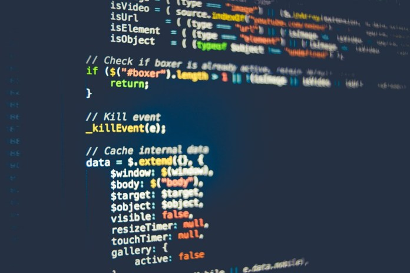

NAVIGATION
CONTENT
- WEB
- HTML
- CSS
- JavaScript
- SAPUI5
CSS는 무엇인가
종속형 시트 또는 캐스케이딩 스타일 시트(Cascading Style Sheets, CSS)는 마크업 언어가 실제 표시되는 방법을 기술하는 언어로[1], HTML과 XHTML에 주로 쓰이며, XML에서도 사용할 수 있다.
W3C의 표준이며, 레이아웃과 스타일을 정의할 때의 자유도가 높다.
CSS1
CSS2
마크업 언어(ex. HTML)가 웹사이트의 몸체를 담당한다면 CSS는 옷과 액세서리 같은 꾸미는 역할을 담당한다고 할 수 있다.
즉, HTML 구조는 그대로 두고 CSS 파일만 변경해도 전혀 다른 웹사이트처럼 꾸밀 수 있다.
현재 개발 중인 CSS3의 경우 그림자 효과, 그라데이션, 변형 등 그래픽 편집 프로그램으로 제작한 이미지를 대체할 수 있는 기능이 추가되었다.
또한 다양한 애니메이션 기능이 추가되어 어도비 플래시를 어느 정도 대체하고 있다.
]
coding
coding
